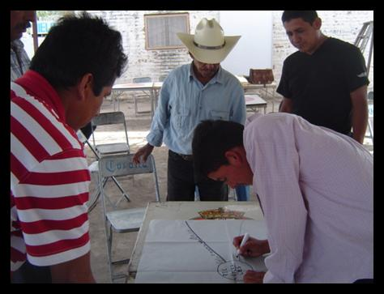

<style>
  .bg-verde {
    background-color: #2c3e50;
    color: white;
  }

  .img-pequena {
  max-width: 600px;  /* o el tamaño que veas más adecuado */
  max-height: 350px; /* evita que sea tan alta */
  width: 100%;        /* mantiene la responsividad */
  height: auto;
  object-fit: cover;  /* opcional, mantiene proporciones agradables */
}

  .header-container {
    display: flex;
    flex-direction: row;
    align-items: center;
    justify-content: space-between;
    min-height: 220px; /* altura controlada */
    padding: 20px 30px;
    position: relative;
  }

  .logo-cid {
    max-height: 200px;
    width: auto;
    filter: brightness(0) invert(1);
  }

  .main-content {
    text-align: center;
    flex: 1;
    padding: 0 20px;
  }

  .main-content h1 {
    font-size: 3.0rem;
    margin-bottom: 8px;
  }

  .main-content p.lead {
    font-size: 1.7rem;
    color: #c5a100;
    margin-bottom: 12px;
  }

  .btn-dorado {
    background-color: #c5a100;
    color: white;
    border: none;
    font-weight: 700;
    padding: 15px 24px; 
    font-size: 0.9rem;
    border-radius: 10px;
  }

  .btn-dorado:hover {
    background-color: #b29500;
  }

  .colaboraciones-container {
    display: flex;
    flex-direction: column;
    gap: 12px;
    align-items: flex-end;
  }

  .colaboracion-card {
    background: rgba(255, 255, 255, 0.95);
    border-radius: 10px;
    padding: 10px;
    width: 180px;
    text-align: center;
    box-shadow: 0 3px 6px rgba(0, 0, 0, 0.1);
  }

  .colaboracion-img {
  max-height: 40px; /* Antes estaba en 50px u 80px */
  max-width: 100px;  /* Antes era 120px o más */
  margin-bottom: 6px; /* Ajuste fino */
  object-fit: contain;
}


  .colaboracion-text {
    color: #2c3e50;
    font-size: 0.8rem;
    margin: 0;
  }

  @media (max-width: 992px) {
    .header-container {
      flex-direction: column;
      align-items: center;
      text-align: center;
    }

    .logo-cid {
      margin-bottom: 15px;
    }

    .colaboraciones-container {
      flex-direction: row;
      justify-content: center;
      margin-top: 15px;
    }

    .colaboracion-card {
      width: 150px;
    }
  }
  .section-title {
  margin-bottom: 2rem; /* Puedes ajustar este valor (ej. 2rem, 3rem, 40px) */
}
.proyecto-card {
  background-color: white;
  border-radius: 0.5rem;       /* Bordes redondeados */
  box-shadow: 0 4px 8px rgba(0, 0, 0, 0.1); /* Sombra sutil */
  padding: 1.5rem;             /* Espaciado interno */
  margin-bottom: 2rem;         /* Separación entre cards */
}
</style>

<section class="bg-verde">
  <div class="container-fluid header-container">
    

    <div class="main-content">
      <h1 class="fw-bold">CID Consultores</h1>
      <p class="lead">Consultoría integral en desarrollo ambiental, social y productivo</p>
      <a href="#projects" class="btn btn-dorado">Conoce nuestros servicios</a>
    </div>

    <div class="colaboraciones-container d-flex flex-wrap justify-content-center gap-4 mt-4">
      <a [routerLink]="['/maestria-informacion']" class="colaboracion-card text-decoration-none text-dark">
        
        <p class="colaboracion-text text-center">Maestría en Educación Integral</p>
      </a>

      <a [routerLink]="['/diplomado-informacion']" class="colaboracion-card text-decoration-none text-dark">
        
        <p class="colaboracion-text">Diplomado en Administración de Servicios y Calidad</p>
      </a>
      
        
      </div>
    </div>

</section>


<!-- PROJECTS SECTION -->
<section id="projects" class="py-5 bg-claro">
  <div class="container">
    <h2 class="text-center section-title">Proyectos destacados</h2>

    <div class="row mb-4 align-items-center proyecto-card">
      <div class="col-md-6">
        <h4>Levantamiento de usos de suelo</h4>
        <p><strong>Cliente:</strong> Comisión de Planeación Urbana (COPLAUR)</p>
        <p><strong>Periodo:</strong> 2007 - 2009</p>
        <p><strong>Propósito:</strong> Levantamiento de usos de suelo del Ayuntamiento de Guadalajara.</p>
        <p><strong>Productos:</strong> 150,000 fotografías y registros, proyecto en ArcMap con información geográfica vinculada a fotografías prediales.</p>
        <p><strong>Fases:</strong> Campo, fotografía, base de datos, shape files, sistema de información geográfica.</p>
      </div>
      <div class="col-md-6">
         
      </div>
    </div>

    <div class="row mb-4 align-items-center proyecto-card">
      <div class="col-md-6 order-md-2">
        <h4>Plan de desarrollo comunitario</h4>
        <p><strong>Cliente:</strong> Secretaría de Planeación (SEPLAN)</p>
        <p><strong>Periodo:</strong> 2009</p>
        <p><strong>Propósito:</strong> Impulsar redes de desarrollo sustentable en zonas de alta marginación.</p>
        <p><strong>Productos:</strong> 1 estudio, 4 programas, memorias de campo, sistema de información geográfica.</p>
        <p><strong>Fases:</strong> Preselección, diagnóstico, plan de desarrollo, indicadores, aprobación comunitaria.</p>
      </div>
      <div class="col-md-6 order-md-1">
        
      </div>
    </div>

    <div class="row align-items-center proyecto-card">
      <div class="col-md-6">
        <h4>Estudio de impacto PRO-SNI</h4>
        <p><strong>Cliente:</strong> Universidad de Guadalajara</p>
        <p><strong>Periodo:</strong> 2009</p>
        <p><strong>Propósito:</strong> Evaluación del impacto del PRO-SNI y SNCA.</p>
        <p><strong>Productos:</strong> Informes, reportes SPSS, mapeo de procedimientos, entrevistas.</p>
        <p><strong>Fases:</strong> Campo, entrevistas, análisis estadístico, documentación.</p>
      </div>
      <div class="col-md-6">
        
      </div>
    </div>
  </div>
</section>

<app-home-servicios></app-home-servicios>